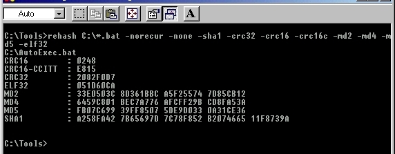

| Adler-32 | 32 bits | ||
| CRC-16 | 16 bits | ||
| CRC-16-CCITT | 16 bits | ||
| CRC-16-XMODEM | 16 bits | ||
| CRC-32 | ANSI X3.66, FIPS PUB 71 | 32 bits | |
| CRC-64 | 64 bits | ||
| eDonkey-2000 | 128 bits | ||
| ELF-32 | 32 bits | ||
| FCS-16 | 16 bits | ||
| FCS-32 | 32 bits | ||
| FNV (FNV-32/FNV-64) | 32/64 bits | ||
| GHash (GHash-32-3, GHash-32-5) | - | - | 32 bits |
| GOST-Hash | R 34.11-94 | 256 bits | |
| HAVAL (3/4/5 passes, 256 bits) | Zheng, Pieprzyk, Seberry |
256 bits | |
| MD2 | RFC 1319 | Rivest | 128 bits |
| MD4 | RFC 1320 | Rivest | 128 bits |
| MD5 | RFC 1321 | Rivest | 128 bits |
| RIPEMD-128/RIPEMD-160 | 128/160 bits | ||
| SHA-1 | FIPS PUB 180-1 | NIST/NSA | 160 bits |
| SHA-2 (SHA256/SHA384/SHA512) | NIST/NSA | 256/384/512 bits | |
| SizeHash-64 | - | - | 64 bits |
| Tiger | Anderson, Biham | 192 bits | |
| XUM-32 | 32 bits |
rehash [options1] filespec [options2] [> outputfile]The command-line is parsed from the left to the right. So if you execute ReHash like this:
rehash -all -none *.*it will output nothing, because you first activate all algorithms and then deactivate them all.
| . | Matches a period. Doesn't have a special meaning. |
| ? | Matches any single character. |
| * | Matches zero or more occurences of any character. |
| [ab] | Set. Matches any character in the set. In this case 'a' or 'b'. |
| [a-m] | Range. Matches any character in the defined range. Here all characters between 'a' and 'm'. |
| ! | Negation flag. Matches everything that doesn't match the following pattern. |
| [!R] | Matches any character that is not in the defined range R. |
| \ or ` | Quote. Matches exactly the following character. |
rehash "/home/[st]*.png"
rehash C:\web\*.jp[eg]
| -out:none | Output nothing. |
| -out:raw / -out:text | Output the hashes in text format. |
| -out:html | Output the hashes in HTML format. |
| -out:xml | Output the hashes in XML format. |
| -out:csv | Output the hashes in CSV format. |
| -out:pad:true / -out:pad:false | Pad the hashes to full words or not. |
| -out:word:X | Specifies the word size. Can be 8, 16, 32, ..., 1024, 2048, 'inf'. |
| -out:nospaces | Same as 'out:word:inf'. |
| -out:lowhex / -out:uphex | When output hex characters: lowercase or uppercase. |
| -out:decimal | Output hash bytes in decimal format. |
| -out:base64 | Output the hash byte string as base-64 coded string. |
rehash "/mnt/*" -hmac:Jefe
rehash.exe C:\Windows\*.ini
rehash.exe -norecur C:\Windows
rehash.exe -none -md5 -sha1 C:\*.bat
rehash.exe -norecur -none -gost C:\Temp\*
rehash.exe -none -md5 C:\homepage\*.zip > C:\homepage\downloads\hashes.txt
| --help / -h / -?/ --version / -v |
Print some information about ReHash. |
| -rcrsv / -recur / -r | Recursive scanning. Scan all files in the specified path including files in subdirectories. |
| -norcrsv / -norecur | Disable recursive scanning. Scan only the files in the specified path not including subdirectories. |
| -all / -a | Enable all algorithms. |
| -none / -n | Disable all algorithms. |
| -adler32 / -noadler32 | Enable/disable the Adler32 algorithm. |
| -crc16 / -nocrc16 | Enable/disable the CRC-16 algorithm. |
| -crc16c / -nocrc16c | Enable/disable the CRC-16-CCITT algorithm. |
| -crc16x / -nocrc16x | Enable/disable the CRC-16-XMODEM algorithm. |
| -crc32 / -nocrc32 | Enable/disable the CRC-32 algorithm. |
| -crc64 / -nocrc64 | Enable/disable the CRC-64 algorithm. |
| -ed2k / -noed2k | Enable/disable the ED2K algorithm. |
| -elf32 / -noelf32 | Enable/disable the ELF-32 algorithm. |
| -fcs16 / -nofcs16 | Enable/disable the FCS-16 algorithm. |
| -fcs32 / -nofcs32 | Enable/disable the FCS-32 algorithm. |
| -fnv32 / -nofnv32 | Enable/disable the FNV-32 algorithm. |
| -fnv64 / -nofnv64 | Enable/disable the FNV-64 algorithm. |
| -ghash3 / -noghash3 | Enable/disable the GHash-3 algorithm. |
| -ghash5 / -noghash5 | Enable/disable the GHash-5 algorithm. |
| -gost / -nogost | Enable/disable the GOST-Hash algorithm. |
| -haval3 / -nohaval3 | Enable/disable the HAVAL-3-256 algorithm. |
| -haval4 / -nohaval4 | Enable/disable the HAVAL-4-256 algorithm. |
| -haval5 / -nohaval5 | Enable/disable the HAVAL-5-256 algorithm. |
| -md2 / -nomd2 | Enable/disable the MD2 algorithm. |
| -md4 / -nomd4 | Enable/disable the MD4 algorithm. |
| -md5 / -nomd5 | Enable/disable the MD5 algorithm. |
| -rmd120 / -normd120 | Enable/disable the RipeMD-120 algorithm. |
| -rmd160 / -normd160 | Enable/disable the RipeMD-160 algorithm. |
| -sha1 / -nosha1 | Enable/disable the SHA-1 algorithm. |
| -sha256 / -nosha256 | Enable/disable the SHA-256 algorithm. |
| -sha384 / -nosha384 | Enable/disable the SHA-384 algorithm. |
| -sha512 / -nosha512 | Enable/disable the SHA-512 algorithm. |
| -size32 / -nosize32 | Enable/disable the Size-32 algorithm (simply the byte-count of the message). |
| -tiger / -notiger | Enable/disable the TIGER algorithm. |
| -xum32 / -noxum32 | Enable/disable the XUM32 algorithm. |
rehash -benchOn my 850 MHz processor, ReHash outputs such a table:
Algorithm | Hash length | Hashed bytes/second ============================================================ Adler32 | 32 bits | 37 MB CRC16 | 16 bits | 35 MB CRC16-CCITT | 16 bits | 35 MB CRC16-XMODEM | 16 bits | 23 MB CRC32 | 32 bits | 56 MB CRC64 | 64 bits | 20 MB ED2K | 128 bits | 68 MB ELF32 | 32 bits | 36 MB FCS16 | 16 bits | 35 MB FCS32 | 32 bits | 54 MB etc...